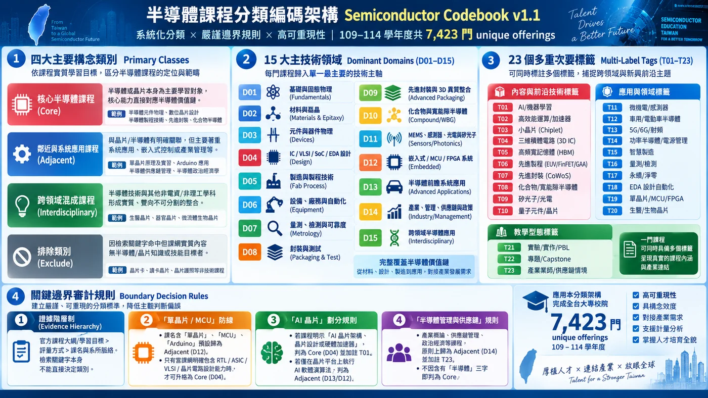
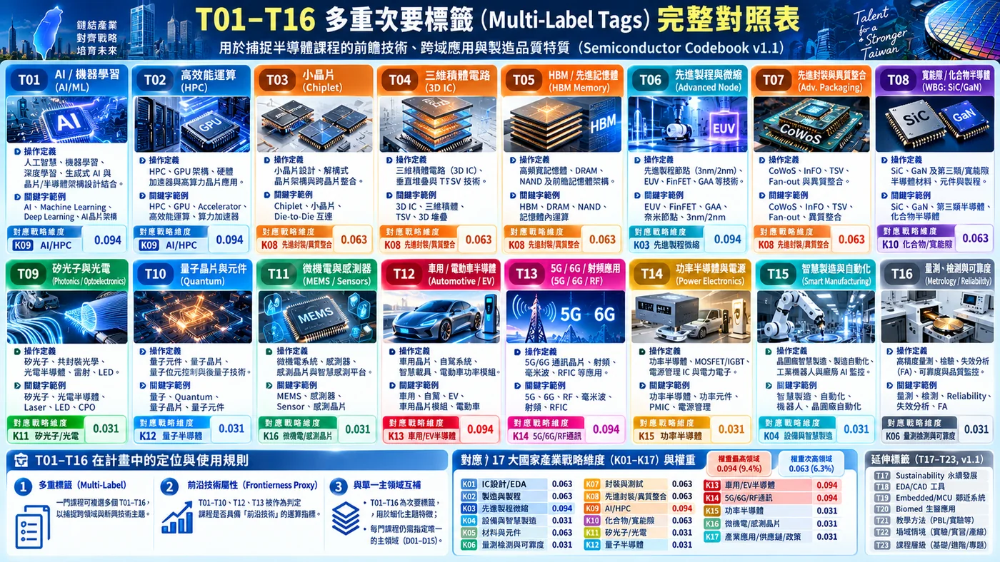
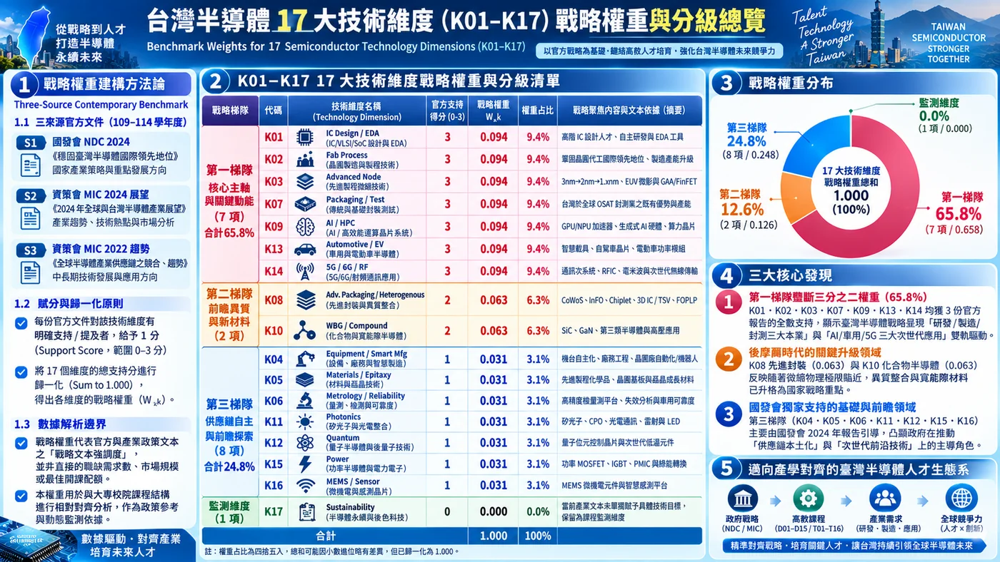

這一段處理研究最容易被忽略、卻最致命的問題：重複列示、母體錯置、零值遺漏、分類邊界與 AI 輔助量測。
檢查來源、學年度、欄位、遺漏值、學校名稱、異常列示與敏感欄位。原始資料共約 8,763 筆列示。
把資料拆成 Listing（列示）、Offering（實際開課單位）、Linkage（跨系/跨班連結）三層，分析以 Offering 為主。重建後得到 7,423 個 unique offerings。
每年先判斷哪些一般大學／科技大學「當年仍在系統中」，再把沒有半導體課程的學校補成 0。主分析共 801 institution-years，其中 297 筆是零課程年份。
正式 v1.1 分為 Core、Adjacent、Interdisciplinary、Exclude，並指定 D01–D15 主領域與 T01–T23 多重標籤。
120 筆 Human-Verified pilot 用來修正規則；7,423 筆最終分類中，Core 6,066、Adjacent 1,149、Interdisciplinary 208。其餘採 deterministic AI-assisted v1.1。
不只跑一種分類定義，而是比較 Core only、Core + Interdisciplinary、High/Human-Verified Broad、排除 Low-confidence 等版本。
把課程層級資料彙總到 institution-year，保留課程數、provider status、領域 breadth、frontierness、appliedness 等指標，供 STEP 7–10 使用。



半導體／晶片本身就是主要學習對象，例如元件、製程、IC 設計、封裝測試。
明確與晶片能力相關，但重點可能是嵌入式、平台、應用或產業情境。
半導體與另一領域共同構成主要學習核心，不只是「順便提到」。
只是關鍵字命中，但不符合研究真正想量的半導體課程構念。